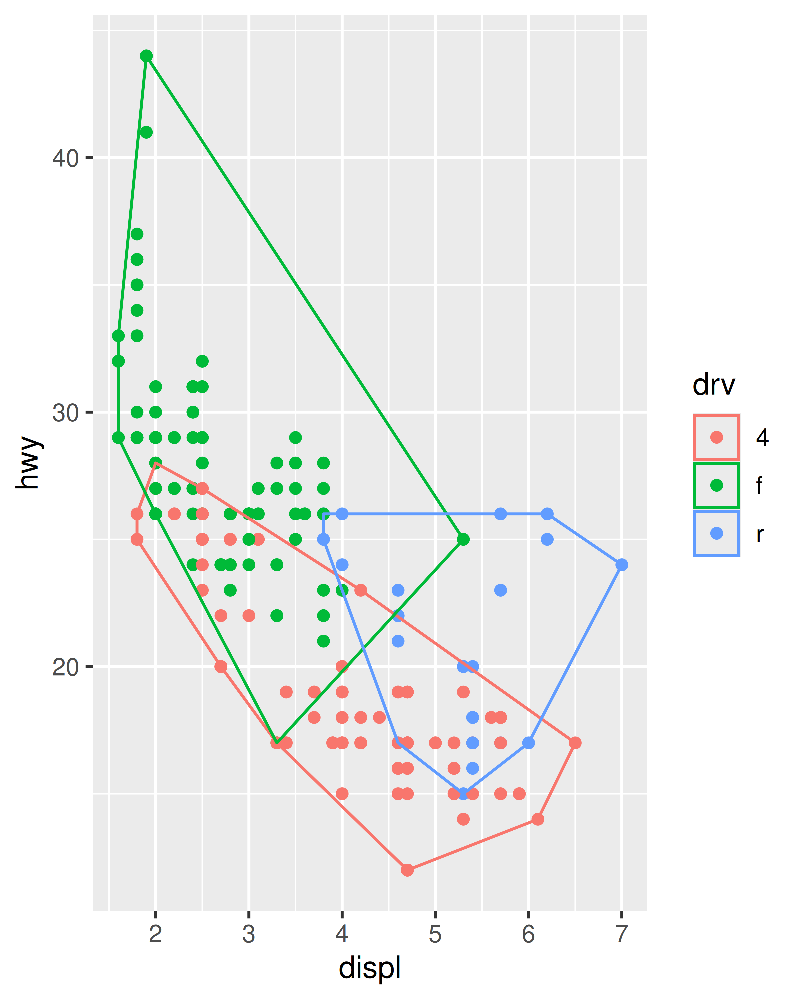
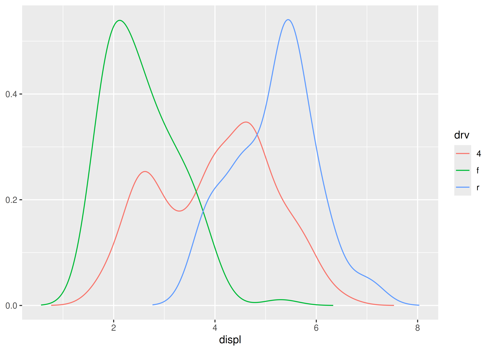
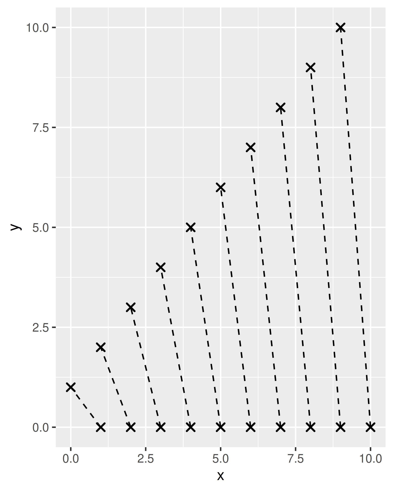

theme_minimal <- function(base_size = 11,
base_family = "",
base_line_size = base_size/22,
base_rect_size = base_size/22) {
theme_bw(
base_size = base_size,
base_family = base_family,
base_line_size = base_line_size,
base_rect_size = base_rect_size
) %+replace%
theme(
axis.ticks = element_blank(),
legend.background = element_blank(),
legend.key = element_blank(),
panel.background = element_blank(),
panel.border = element_blank(),
strip.background = element_blank(),
plot.background = element_blank(),
complete = TRUE
)
}3 编写ggplot2扩展
- 本篇文章的内容来自于Extending ggplot2。
- 文章由kimi AI助手进行初级翻译，然后由人工校对，如有错误，请指正！
4 扩展 ggplot2
ggplot2 包的设计使其能够相对容易的通过通用语法组件来构建新的绘图类型，以扩展其功能。ggplot2 允许拓展开发者将其拓展作为包进行分发，拓展的易制作性也使编写一次性拓展来解决特定的绘图问题成为可能。本章讨论了编写 ggplot2 拓展的不同方式，并强调了需要注意的特定问题。我们将在整章中提供小示例，但要从头到尾查看一个完整的示例，请参见 Chapter 4。
4.1 新主题 New themes
4.1.1 修改主题
主题可能是最简单的拓展形式，它们只需要使用在 ggplot2 创建图表时会使用的代码。虽然可以从零开始构建新主题，但通常修改现有主题更简单且不易出错。ggplot2 源代码中通常采用这种方法。例如，这是 theme_minimal() 的源代码：
如你所见，代码与在为图表添加样式时写的代码没有太大不同。theme_minimal() 函数使用 theme_bw() 作为基础主题，然后使用 %+replace% 运算符替换了其中某些参数的值。在创建新主题时，为用户提供一些参数来自定义主题是比较好的做法，比如文本、线条的粗细和主题辅助颜色等。例如，我们可以创建一个 theme_minimal() 的变体，允许用户指定图表的背景颜色：
theme_background <- function(background = "white", ...) {
theme_minimal(...) %+replace%
theme(
plot.background = element_rect(
fill = background,
colour = background
),
complete = TRUE
)
}
base <- ggplot(mpg, aes(displ, hwy)) + geom_point()
base + theme_minimal(base_size = 14)
base + theme_background(base_size = 14)
base + theme_background(base_size = 14, background = "grey70")

4.1.2 完整的主题
需要注意的是， theme_minimal() 和 theme_background() 的代码中 complete = TRUE 的使用。在创建自己的 ggplot2 主题时，complete = TRUE将确保你的主题的行为与默认主题相同，因此不太可能让用户很惊讶。为了理解为什么这是必要的，比较这两个主题：
# good
theme_predictable <- function(...) {
theme_classic(...) %+replace%
theme(
axis.line.x = element_line(color = "blue"),
axis.line.y = element_line(color = "orange"),
complete = TRUE
)
}
# bad
theme_surprising <- function(...) {
theme_classic(...) %+replace%
theme(
axis.line.x = element_line(color = "blue"),
axis.line.y = element_line(color = "orange")
)
}两个主题都打算做同一件事：更改默认的 theme_classic()主题，以便 x 轴用蓝色线条绘制，y 轴用橙色线条绘制。乍一看，两个版本似乎都符合用户期望：
base + theme_classic()
base + theme_predictable()
base + theme_surprising()
然而，假设你的主题用户想要移除轴线条：
base + theme_classic() + theme(axis.line = element_blank())
base + theme_predictable() + theme(axis.line = element_blank())
base + theme_surprising() + theme(axis.line = element_blank())

theme_predictable() 的行为与 theme_classic() 相同，轴线条被移除，但对于 theme_surprising() 则不是这样。原因是 ggplot2 将完整主题视为可以重写特定值：当用户向完整主题添加 theme(axis.line = element_blank()) 时，就会重写 axis.line.x 或 axis.line.y 的值，因为他们的值是从用户命令中的 axis.line 继承的。这对用户来说是好事，因为它允许用户使用像 theme_predictable() + theme(axis.line = ...) 这样的命令覆盖所有从 axis.line 继承的内容。相比之下，theme_surprising() 没有指定一个完整主题。当用户调用 theme_surprising() 时，ggplot2 将设置 axis.line.x 和 axis.line.y 的 theme() 命令完全视为用户输入的命令。因此，图表规范等效于此：
base +
theme_classic() +
theme(
axis.line.x = element_line(color = "blue"),
axis.line.y = element_line(color = "orange"),
axis.line = element_blank()
)在这段代码中，特定优先继承规则适用，因此设置 axis.line 不会覆盖更具体的 axis.line.x。
4.1.3 定义主题元素
ggplot2 主题的结构由元素树定义。元素树指定了每个主题元素的类型以及它从哪里继承其值（你可以使用 get_element_tree() 函数将此树作为列表返回）。ggplot2 的扩展系统允许你通过使用 register_theme_elements() 函数将新主题元素注册为元素树的一部分来定义新主题元素。假设你正在编写一个名为 “ggxyz” 的新包，它包括为坐标系统一部分的面板注释，你希望这个面板注释成为一个主题元素：
register_theme_elements(
ggxyz.panel.annotation = element_text(
color = "blue",
hjust = 0.95,
vjust = 0.05
),
element_tree = list(
ggxyz.panel.annotation = el_def(
class = "element_text",
inherit = "text"
)
)
)在包中定义新主题元素时要注意两点：
从包的
.onLoad()函数中调用register_theme_elements()，以便新主题元素对使用包中函数的任何人都可用，无论包是否已附加。在任何新主题元素前包含你的包的名称作为前缀。这样，如果有人写了另一个面板注释包
ggabc，就不会有主题元素ggxyz.panel.annotation和ggabc.panel.annotation之间的潜在冲突。
元素树更新后，就可以定义一个使用新主题元素的新坐标系统。一个简单的方法是定义一个新的 CoordCartesian ggproto 对象函数。我们将在 Section 4.4 中更多地讨论这一点，但现在只需知道这段代码有效：
coord_annotate <- function(label = "panel annotation") {
ggproto(NULL, CoordCartesian,
limits = list(x = NULL, y = NULL),
expand = TRUE,
default = FALSE,
clip = "on",
render_fg = function(panel_params, theme) {
element_render(
theme = theme,
element = "ggxyz.panel.annotation",
label = label
)
}
)
}接着可以有如下代码：
base + coord_annotate("annotation in blue")
base + coord_annotate("annotation in blue") + theme_dark()修改了元素树后，可以使用 reset_theme_settings() 函数来恢复默认元素树，丢弃所有新元素定义，并将当前激活的主题重置为默认。
4.2 新统计变换
创建新统计变换是扩展 ggplot2 功能最有用的方式之一。当用户向图表添加新图层时，他们通常使用 geom 函数，因此作为开发人员，你可能会认为你的 ggplot2 扩展应该封装为一个新的 geom。这在一定程度上是正确的，因为你的用户可能会想要使用 geom 函数，但实际上不同 geoms 之间的多样性主要是由不同的统计变换决定的。使用统计变换的好处之一是它们纯粹是关于数据的转换。大多数 R 用户和开发人员对数据转换非常熟悉，这使得定义新统计变得很容易。只要所需的功能可以封装在一个统计中，就无需对任何 grid 调用进行调整。
4.2.1 创建统计变换
就像在 Chapter 2 中讨论的一样，统计变换的核心是对三个函数 compute_layer()、compute_panel() 和 compute_group()的调用，这三个函数都是 ggproto 对象定义的统计变换方法。默认情况下，前两个函数不执行太多操作，它们只是将数据按照下面的方式进行传递：
-
compute_layer()按PANEL列拆分数据，随后调用compute_panel()，并重新组装结果。 -
compute_panel()将传递的数据按group列拆分，随后调用compute_group()，并重新组装结果。
作为开发人员，你通常只需要指定 compute_group() 函数，其作用是获取单个组的数据并按要求进行转换。这就足以创建一个能够正常工作的统计变换，尽管在性能上可能有所欠缺。有时将一些统计变换工作转移到 compute_panel() 上来是有价值的：这样做可以加速计算过程，避免费时的拆分-组合步骤（我们将在 Section 4.2 中看到一个这样的例子）。然而，通常情况下，最好先仅使用compute_group()函数，看看性能是否足够。
为了说明这一点，我们创建了一个计算一组点的凸包统计变换，使用 grDevices 包中的 chull() 函数。正如你看到的，大部分工作是由我们创建的新 ggproto 对象完成的：
正如在 Section 2.4 中所述，ggproto() 的前两个参数用于指定新对象的名称和父类（这里新对象命名为 "StatChull"），它从 Stat 对象继承属性和方法，我们只需要重写 Stat 类中提供的属性和方法，即 compute_group() 和 required_aes。我们的 compute_group() 函数接受两个输入，data 和 scales（这是 ggplot2 规定的），但实际计算仅依赖于 data。请注意，由于计算过程必须同时存在两个位置美学（x和y），我们还指定了 required_aes 属性，以确保 ggplot2 知道这些美学是必需的。
创建这个 ggproto 对象，我们就有一个可以工作的统计变换了，但我们还没有给用户提供访问它的方式。为了解决这个问题，我们编写了一个图层函数 stat_chull()。所有图层函数都有相同的形式：在函数参数中指定默认值，然后调用 layer()，将 ... 传递到 params 参数中。... 中的参数将是 geom，stat 或 aes 的参数。
stat_chull <- function(mapping = NULL, data = NULL,
geom = "polygon", position = "identity",
na.rm = FALSE, show.legend = NA,
inherit.aes = TRUE, ...) {
layer(
stat = StatChull,
data = data,
mapping = mapping,
geom = geom,
position = position,
show.legend = show.legend,
inherit.aes = inherit.aes,
params = list(na.rm = na.rm, ...)
)
}现在我们的统计变换就可以在图表中使用：
ggplot(mpg, aes(displ, hwy)) +
geom_point() +
stat_chull(fill = NA, colour = "black")
ggplot(mpg, aes(displ, hwy, colour = drv)) +
geom_point() +
stat_chull(fill = NA)
创建新统计变换时，提供相应的 geom_*() 构造函数以及 stat_*() 构造函数是一个好习惯，因为大多数用户习惯于使用 geoms 而不是统计变换来添加图层。我们将在 Section 4.3 中展示一个 geom_chull() 函数是什么样子的。
请注意，并不总是能够以有意义的方式定义 geom_*() 构造函数。当没有明显的默认 geom 用于新的统计变换，或者统计变换旨在轻微修改现有的 geom/stat 时，这种情况就会发生。在这种情况下，明智的做法是只提供 stat_*() 构造函数。
4.2.2 修改参数和数据
在定义新统计变换时，通常需要重写 setup_params() 和/或 setup_data() 函数。这些函数在 compute_*() 函数之前被调用，它们允许在统计变换之前根据其他参数对数据进行调整（特别是数据）：
setup_params()函数首先被调用。它接受两个参数，分别对应图层的data和在统计变换中指定的参数列表（params），并返回会在后续计算中使用的经过修改的参数列表。这里的参数会被compute_*()函数使用，因此修改后的参数列表应与compute_*()函数中的参数对应以便可用。setup_data()函数其次被调用。它也接受data和params作为输入（尽管它接收的参数是setup_params()返回的修改后的参数），并返回修改后的图层数据。重要的是，无论在setup_data()中发生什么修改，PANEL和group列都必须保持不变。
以下示例展示了如何使用 setup_params() 方法定义新的统计变换。修改 setup_data() 方法的示例稍后会包含在 Section 4.3.2 中。
假设我们想要创建一个统计变换 StatDensityCommon，它将数据分组后计算变量的密度估计，并估计所有组的默认宽度。这可以通过许多不同的方式完成，为了简单起见，我们假设我们有一个 common_bandwidth() 函数，它使用 bw.nrd0() 函数为每个组分别估计宽度，然后返回平均值：
我们希望 StatDensityCommon 使用 common_bandwith() 函数，在数据被分组并传递给 compute_group() 函数之前设置一个共同的宽度。这就是 setup_params() 函数的用途：
StatDensityCommon <- ggproto("StatDensityCommon", Stat,
required_aes = "x",
setup_params = function(data, params) {
if(is.null(params$bandwith)) {
params$bandwidth <- common_bandwidth(data)
message("Picking bandwidth of ", signif(params$bandwidth, 3))
}
return(params)
},
compute_group = function(data, scales, bandwidth = 1) {
d <- density(data$x, bw = bandwidth)
return(data.frame(x = d$x, y = d$y))
}
)然后我们用一般的方式定义 stat_*() 函数：
stat_density_common <- function(mapping = NULL, data = NULL,
geom = "line", position = "identity",
na.rm = FALSE, show.legend = NA,
inherit.aes = TRUE, bandwidth = NULL, ...) {
layer(
stat = StatDensityCommon,
data = data,
mapping = mapping,
geom = geom,
position = position,
show.legend = show.legend,
inherit.aes = inherit.aes,
params = list(
bandwidth = bandwidth,
na.rm = na.rm,
...
)
)
}现在我们可以应用我们的新统计变换：
ggplot(mpg, aes(displ, colour = drv)) +
stat_density_common()
#> Picking bandwidth of 0.345
4.3 新 geoms
虽然通过创建新的统计变换可以实现许多事情，但在某些情况下创建新的 geom 是必要的。这些情况包括：
- 从统计变换返回的数据对当前任何 geoms 可以接受的数据形式都是没有意义的。
- 图层需要组合多个 geoms 的输出。
- geom 需要返回的 grobs 是现有 geoms 所没有的。
创建新的 geoms 可能比创建新的统计变换看起来有些令人生畏，因为最终结果是一个 grobs 集合而不是一个修改后的数据框，这对许多开发人员来说不是一个熟悉的领域。尽管如此，除了上述最后一点，你还是可以尝试仅使用统计变换。
4.3.1 修改 geom 默认值
在许多情况下，你的新 geom 可能只是期望一个稍微不同的输入或具有不同默认参数值的现有 geom。前一节中的 stat_chull() 示例是一个很好的例子。注意，在使用 stat_chull() 创建图表时，我们必须手动指定 fill 和 colour 参数，如果它们没有映射到美学上，则不符合我们凸包 geom 的默认值。为了容易的实现这一点，我们可以创建一个 GeomPolygon 的子类，修改默认值，以便它可以产生一个空心多边形。我们可以通过覆盖 default_aes 值直接实现这一点：
GeomPolygonHollow <- ggproto("GeomPolygonHollow", GeomPolygon,
default_aes = aes(
colour = "black",
fill = NA,
linewidth = 0.5,
linetype = 1,
alpha = NA
)
)现在可以使用 GeomPolygonHollow 类作为默认 geom 来定义我们的 geom_chull() 构造函数：
geom_chull <- function(mapping = NULL, data = NULL, stat = "chull",
position = "identity", na.rm = FALSE,
show.legend = NA, inherit.aes = TRUE, ...) {
layer(
geom = GeomPolygonHollow,
data = data,
mapping = mapping,
stat = stat,
position = position,
show.legend = show.legend,
inherit.aes = inherit.aes,
params = list(na.rm = na.rm, ...)
)
} 为了一致性，我们还可以定义 stat_chull() ，并使用这个类作为默认值。无论如何，我们现在有一个新的 geom_chull() 函数，它工作得很好，不需要用户设置参数：
ggplot(mpg, aes(displ, hwy)) +
geom_chull() +
geom_point()4.3.2 修改 geom 数据
在其他情况下，你可能想要定义一个 geom，它等同于现有的 geom，但接受不同格式的数据。ggplot2 源代码中的一个示例是 geom_spoke()，这是 geom_segment() 的一个变体，它接受极坐标数据。为了使这工作，GeomSpoke ggproto 类从 GeomSegment 继承，并使用 setup_data() 函数来获取用户的极坐标数据，然后将其转换为 GeomSegment 期望的格式。为了说明这一点，我们将创建 geom_spike()，一个 geom，它重新实现了 geom_spoke() 的功能。这需要我们重写 required_aes 属性以及 setup_data() 函数：
我们现在编写面向用户的 geom_spike() 函数：
geom_spike <- function(mapping = NULL, data = NULL,
stat = "identity", position = "identity",
..., na.rm = FALSE, show.legend = NA,
inherit.aes = TRUE) {
layer(
data = data,
mapping = mapping,
geom = GeomSpike,
stat = stat,
position = position,
show.legend = show.legend,
inherit.aes = inherit.aes,
params = list(na.rm = na.rm, ...)
)
}我们现在可以在图表中使用 geom_spike() ：
df <- data.frame(
x = 1:10,
y = 0,
angle = seq(from = 0, to = 2 * pi, length.out = 10),
radius = seq(from = 0, to = 2, length.out = 10)
)
ggplot(df, aes(x, y)) +
geom_spike(aes(angle = angle, radius = radius)) +
coord_equal()如统计变换一样，geoms 也有 setup_params() 函数以及 setup_data() 函数，可以用来在绘图之前修改参数（见 Section 4.2.2 示例）。然而，在 geom 中，有一点需要注意，setup_data() 在任何位置调整（对x和y的修改）之前被调用。
4.3.3 组合多个 geoms
定义新 geom 的一个作用是组合不同 geom 的功能。例如，geom_smooth() 函数用于绘制非参数的回归线，它使用 geom_line() 的功能来绘制回归线，并使用 geom_ribbon() 来绘制阴影误差带。要在新 geom 中实现这一点，通常需要考虑绘图过程来完成。就像统计变换通过调用 compute_layer() 、 compute_panel() 和 compute_group() 来构建一样，geom 通过调用 draw_layer()、draw_panel() 和 draw_group() 来构建。
如果你想组合多个 geom 的功能，可以用 draw_*() 函数来准备每个 geom 的数据并将其发送到对应的 geom 来实现，当有很多 grob 时使用 grid::gList() 来收集，如果是带有子项的单个 grob ，则使用 grid::gTree()来收集。作为一个相对简单的例子，考虑 GeomBarbell ggproto 类，它创建一个由两组点连成线的 geom：
GeomBarbell <- ggproto("GeomBarbell", Geom,
required_aes = c("x", "y", "xend", "yend"),
default_aes = aes(
colour = "black",
linewidth = .5,
size = 2,
linetype = 1,
shape = 19,
fill = NA,
alpha = NA,
stroke = 1
),
draw_panel = function(data, panel_params, coord, ...) {
# 点的转换数据
point1 <- transform(data)
point2 <- transform(data, x = xend, y = yend)
# 返回所有三个组件
grid::gList(
GeomSegment$draw_panel(data, panel_params, coord, ...),
GeomPoint$draw_panel(point1, panel_params, coord, ...),
GeomPoint$draw_panel(point2, panel_params, coord, ...)
)
}
) 在这个例子中，draw_panel() 方法返回一个列表，包含三个 grobs ，一个来自 GeomSegment，两个来自 GeomPoint。像往常一样，如果我们希望 geom 对用户可见，我们添加一个构造函数：
geom_barbell <- function(mapping = NULL, data = NULL,
stat = "identity", position = "identity",
..., na.rm = FALSE, show.legend = NA,
inherit.aes = TRUE) {
layer(
data = data,
mapping = mapping,
stat = stat,
geom = GeomBarbell,
position = position,
show.legend = show.legend,
inherit.aes = inherit.aes,
params = list(na.rm = na.rm, ...)
)
}现在我们可以使用这个组合的 geom：
df <- data.frame(x = 1:10, xend = 0:9, y = 0, yend = 1:10)
base <- ggplot(df, aes(x, y, xend = xend, yend = yend))
base + geom_barbell()
base + geom_barbell(shape = 4, linetype = "dashed") 
如果你不能利用现有的任何 geom 实现来创建 grobs，那么你将不得不从头开始实现完整的 draw_*() 函数，这需要对 grid 包有一点了解。有关 grid 的更多信息以及使用它来从基于网格的语法构建 geom ，请参见 Chapter 4。
4.4 新坐标系
坐标系的主要作用是将位置美学（x和y）重新缩放到 [0, 1] 的范围。定义新坐标系相对罕见：在 ggplot2中默认的坐标系适用于大多数非制图案例，并且随着 coord_sf() 的引入，ggplot2 也能够开箱即用地绘制地图
开发人员需要了解坐标系内部的最常见情况是定义新的 geom。draw_*() 函数调用坐标系的 transform() 函数并不少见。例如，CoordCartesian 的 transform() 方法用于重新缩放位置数据，但不会以其他方式转换它，geom 可能需要应用此重新缩放以正确绘制 grob。一个示例出现在 Chapter 4 中。
除了转换位置数据外，坐标系还负责渲染轴、轴标签、面板前景和面板背景。此外，坐标系可以截获并修改图层数据和分面布局。如果有必要，这些功能大部分都可供开发人员使用（一个示例在 Section 4.1.3 中），但在大多数情况下，最好保留这些功能不变。
4.5 新标度
想通过新标度扩展 ggplot2 的情况大致有三种。最简单的情况是，你想要创建新的调色板，用于颜色或填充美学。作为一个简单的例子，假设你想使用这样的调色板函数来填充小提琴图或箱形图：
编写一个 scale_fill_random() 构造函数，将调色板传递给 discrete_scale()，然后在图表中使用它：
scale_fill_random <- function(..., aesthetics = "fill") {
discrete_scale(
aesthetics = aesthetics,
scale_name = "random",
palette = random_colours
)
}
ggplot(mpg, aes(hwy, class, fill = class)) +
geom_violin(show.legend = FALSE) +
scale_fill_random()
#> Warning: The `scale_name` argument of `discrete_scale()` is deprecated as of ggplot2
#> 3.5.0.另一个相对简单的情况是，你提供了一个 geom，它采用新的美学类型，需要进行设置。假设你创建了一个新的绘制线条的 geom，并且你决定使用 width 美学而不是 size 美学。为了使用 width美学，就像你使用 size 那样，你必须为它提供一个默认的标度。默认标度是根据其名称和提供给美学的数据类型来识别的。如果你的 width 美学是连续值，ggplot2 将寻找 scale_width_continuous() 函数，并使用它。如果找不到这样的函数（并且没有明确添加width标度），美学将不会起作用。
还有一个值得提及的情况，但超出了这本书的范围，那就是创建一个新的标度类型。历史上，ggplot2 有两种主要的标度类型，连续和离散标度。最近，bin 标度加入其中，它允许将连续数据按组分为离散的数据。开发人员可以编写其他标度类型，方法是子类化 Scale 或默认的标度类型，并重写 train() 和 map() 函数。
4.6 新位置调整
Position ggproto 类比其他 ggproto 类要简单一些，反映了 position_*() 函数狭窄的作用范围。位置调整的作用是在数据传递给任何绘图函数之前接收和修改数据。严格来说，位置调整可以以任何方式修改数据，但它只修改位置美学。位置调整具有 compute_layer() 和 compute_panel() 两个方法，这些方法类似于统计变换的等效方法，但它没有 compute_group() 方法。它还包含 setup_params() 和 setup_data() 方法，这些方法类似于其他 ggproto 类的 setup_*() 方法，有一个地方值得注意：setup_params() 方法只接收数据作为输入，而不是参数列表。原因是 position_*() 函数从不在 ggplot2 中单独使用：相反，它们总是在指定图层的主 geom_*() 或 stat_*() 命令中调用，主命令中的参数不会传递给 position_*() 函数调用。
为了提供一个简单的例子，我们将实现一个简化版的 position_jitternormal() 函数，它来自 ggforce 包，其行为与 position_jitter() 相同，只不过扰动是从正态分布而不是均匀分布中采样的。为了保持论述简单，我们假设我们有以下函数定义：
当这个函数被调用时，normal_transformer() 返回一个函数，这个函数通过添加均值为零、标准差为 sd 的随机噪声来扰动输入向量。创建这个新位置调整的第一步是创建一个 Position 类的子类：
PositionJitterNormal <- ggproto('PositionJitterNormal', Position,
# 我们需要一个 x 和 y 位置美学
required_aes = c('x', 'y'),
# 通过使用 "self" 参数，我们可以访问用户传递给位置的参数，并将它们添加为图层参数
setup_params = function(self, data) {
list(
sd_x = self$sd_x,
sd_y = self$sd_y
)
},
# 当计算图层时，我们可以从参数列表中读取标准差参数，并使用它们来转换位置美学
compute_layer = function(data, params, panel) {
# 为 x 和 y 位置尺度构建变换器
x_transformer <- normal_transformer(x, params$sd_x)
y_transformer <- normal_transformer(y, params$sd_y)
# 返回转换后的数据
transform_position(
df = data,
trans_x = x_transformer,
trans_y = y_transformer
)
}
)compute_layer() 函数使用了 transform_position()，这是 ggplot2 提供的一个便利函数，其作用是将开发者定义的函数应用于所有与位置标度相关的美学值（例如，不仅仅是 x 和 y，还有 xend 和 yend）。
在实际的开发环境中，position_jitternormal() 构造函数将进行一些输入验证，以确保用户没有指定负的标准差，简单的示例如下：
position_jitternormal <- function(sd_x = .15, sd_y = .15) {
ggproto(NULL, PositionJitterNormal, sd_x = sd_x, sd_y = sd_y)
}我们现在可以在创建图表时使用我们的新位置调整函数。要查看 position_jitter() 和我们刚刚定义的 position_jitternormal() 函数之间的区别，请比较以下图表：
df <- data.frame(
x = sample(1:3, 1500, TRUE),
y = sample(1:3, 1500, TRUE)
)
ggplot(df, aes(x, y)) + geom_point(position = position_jitter())
ggplot(df, aes(x, y)) + geom_point(position = position_jitternormal())在设计新位置调整时需要考虑的一个实际问题是，用户很少直接调用位置调整的构造函数。用户用来指定图层的命令更可能是像 position = "dodge" 而不是 position = position_dodge()，更不用说覆盖默认值了，就像用户指定 position = position_dodge(width = 0.9) 那样。因此，如果可能的话，要仔细思考并使默认值适用于大多数情况。这可能非常棘手：位置调整对图层数据的形状和格式几乎没有控制权，但用户将期望它们在所有情况下都可用。一个例子是 dodging，用户可能想要箱形图和点图 dodging，并期望点图出现在箱形图的相同区域。在用户层面上，这是一个完全合理的期望，但对开发人员来说可能很棘手。箱形图有一个明确的宽度，可以用来控制 dodging，而点图则不是这样，但用户期望它们以相同的方式移动。这种考虑通常意味着位置调整的最终实现比简单的解决方案要复杂得多，以照顾到更为广泛的情况。
4.7 新分面
分面是 ggplot2 中最强大的概念之一，扩展分面是修改 ggplot2 操作方式的最强大方式之一。这种力量是有代价的：分面负责接收所有面板，将轴和条带附加到它们上，然后以预期的方式排列它们。从头开始创建一个全新的分面系统需要深入了解 grid 和 gtable，可能是一个令人生畏的挑战。幸运的是，你并不总是需要从头开始创建分面。例如，如果你的新分面将产生位于网格的面板，你通常可以子类化 FacetWrap 或 FacetGrid 并修改一两个方法。特别是，你可能想要定义新的 compute_layout() 和/或 map_data() 方法：
compute_layout()方法接收原始数据集，并创建布局规范，这是一个数据框，每行代表面板在网格上的位置，以及哪些轴限制应该是自由的，哪些应该是固定的。map_data()方法接收这个布局规范和原始数据作为输入，并将PANEL列 附加到它上面，用于将数据框中的每一行分配给布局中的一个面板。
为了说明如何通过子类化现有分面来创建新分面，我们将创建一个相对简单的分面系统，该系统将 “分散” 面板，将它们随机放置在网格上。为此，我们将创建一个名为 FacetScatter 的新 ggproto 对象，它是 FacetWrap 的子类，并编写一个新的 compute_layout() 方法，将每个面板放置在面板网格中随机选择的位置中：
FacetScatter <- ggproto("FacetScatter", FacetWrap,
# 这并不重要的例子：我们所做的一切是
# 强制所有面板使用固定尺度，以便
# 其余的例子可以保持简单
setup_params = function(data, params) {
params <- FacetWrap$setup_params(data, params)
params$free <- list(x = FALSE, y = FALSE)
return(params)
},
# compute_layout() 方法做工作
compute_layout = function(data, params) {
# 创建一个数据框，每个分面变量一列，
# 每一行代表一个可能的值组合
# （即，每一行一个面板）
panels <- combine_vars(
data = data,
env = params$plot_env,
vars = params$facets,
drop = FALSE
)
# 创建一个数据框，ROW 和 COL 列，
# 每一行代表面板网格中可能的单元格
locations <- expand.grid(ROW = 1:params$nrow, COL = 1:params$ncol)
# 随机抽样位置的子集
shuffle <- sample(nrow(locations), nrow(panels))
# 为每个面板分配一个位置
layout <- data.frame(
PANEL = 1:nrow(panels), # 面板标识符
ROW = locations$ROW[shuffle], # 面板的行号
COL = locations$COL[shuffle], # 面板的列号
SCALE_X = 1L, # 所有 x 轴尺度都是固定的
SCALE_Y = 1L # 所有 y 轴尺度都是固定的
)
# 将布局信息与面板标识符绑定
# 并返回得到的规范
return(cbind(layout, panels))
}
)这是在构建本节末尾显示的图表时创建的布局规范：
#> PANEL ROW COL SCALE_X SCALE_Y manufacturer
#> 1 1 4 1 1 1 audi
#> 2 2 5 5 1 1 chevrolet
#> 3 3 5 1 1 1 dodge
#> 4 4 5 3 1 1 ford
#> 5 5 1 5 1 1 honda
#> 6 6 4 4 1 1 hyundai
#> 7 7 3 5 1 1 jeep
#> 8 8 2 2 1 1 land rover
#> 9 9 5 2 1 1 lincoln
#> 10 10 4 5 1 1 mercury
#> 11 11 2 4 1 1 nissan
#> 12 12 5 4 1 1 pontiac
#> 13 13 3 2 1 1 subaru
#> 14 14 5 6 1 1 toyota
#> 15 15 4 6 1 1 volkswagen接下来，我们将编写 facet_scatter() 构造函数，以将此功能暴露给用户。对于分面来说，这就像创建一个新 ggproto 对象（在这种情况下是 FacetScatter）的实例一样简单，它将用户指定的参数传递给分面：
关于这个构造函数有几个注意事项。首先，为了保持示例简单，facet_scatter() 包含的参数比 facet_wrap() 少，我们将 nrow 和 ncol 作为必需参数：用户需要指定面板的网格的大小。其次，facet_scatter() 函数要求你使用 vars() 指定分面。如果用户尝试提供公式，它将不起作用。相关地，请注意使用 rlang::quos_auto_name()：vars() 函数返回一个未命名的表达式列表（技术上，quosures），但下游代码需要一个命名列表。如果你期望用户使用 vars()，那这就是你需要做的，但如果你想支持其他输入格式，你就还需要其他工作（你可以通过查看 ggplot2 源代码来看如何做到这一点）。
无论如何，我们现在有一个可以工作的分面：
ggplot(mpg, aes(displ, hwy)) +
geom_point() +
facet_scatter(vars(manufacturer), nrow = 5, ncol = 6)